|
Open Dag 2 augustus 2003 |
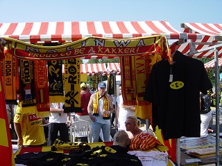
Op deze Besloten Dag was het FP officieel niet
aanwezig evenmin als FanDome/KPD.
Dankzij de spontane steun van Eastern Wing
uit Mechelen konden we nog een behoorlijk
aantal Rodasupporters iets moois aanbieden.
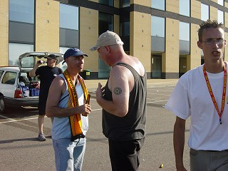
Loek, de vriendelijke Roda-reus is sinds kort
van Maastricht naar Sjeveemet verhuisd!
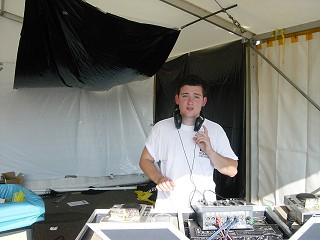
DJ Ramon blies 110 dB de lucht in!
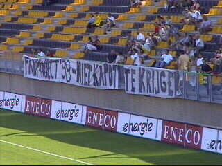
Gisteren in Huizen, nu in Kerkrade.
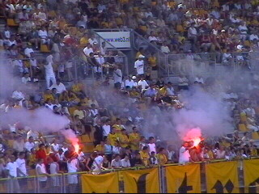
Achter de goal zowaar twee fakkels....
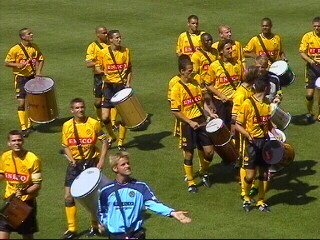
De spelers werden een voor een gepresenteerd.
Berglund was er nog niet. Verder was er geen
nieuws onder de horizon. De spelersselectie
moest 'n halfuur trommelen als Duracel-konijntjes.
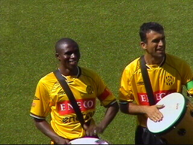
Edrissa en Ioannis bang the drums
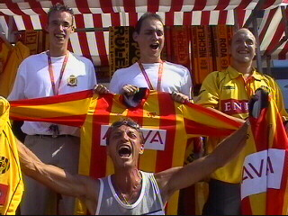
Terug bij onze vrienden uit Mechelen die een
Roda-supportersvereniging willen oprichten. In
plaats van dit initiatief met gepaste trots te
accepteren zegt Roda dat er al genoeg fanclubs
zijn. Deze arrogantie doet menig Roda/KVM-
fan rood kleuren van schaamte!
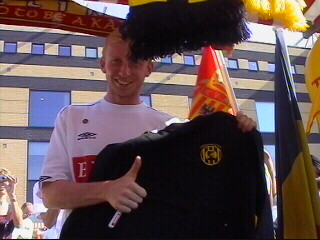
Sven poseert graag voor een MO-sweater.
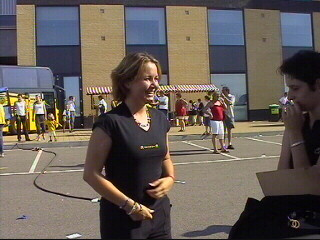
Deze schoonheid krijgt wat ze verdient: een
MO-girlie!
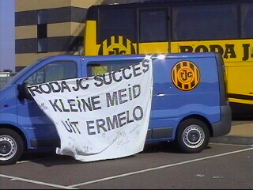
Hoe oud is die meid onderhand???
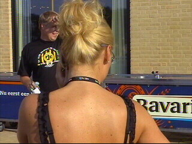
Forza Yolanda vd Luer, de enige die nog een
biertje voor ons wilde tappen na 18.00 uur!
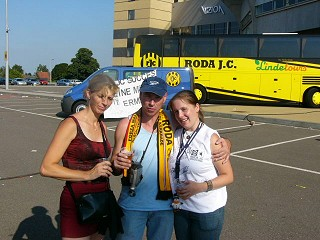
Miss Parkstadverkiezingen??? De winnaressen
zijn al bekend ;-) (credits KB)
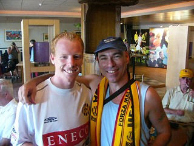
Puis-je fais une photograph avec toi? (credits KB).